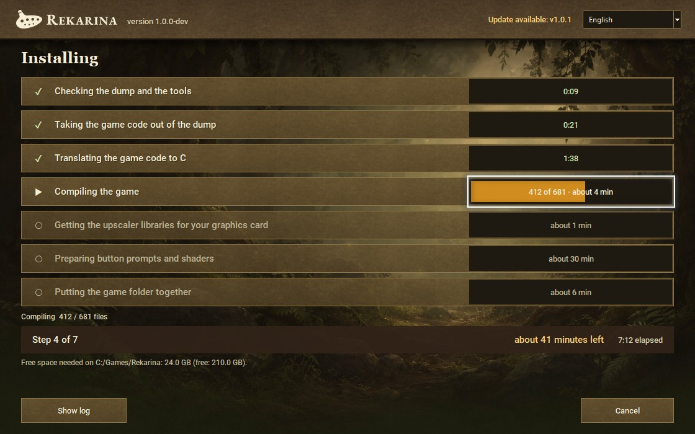

A native PC port made by static recompilation, not emulation.
Built on your own PC from your own copy of the game: 100+ fps, a sharp native picture, DLSS and FSR.
No game files are included, and none are downloaded. You need your own legally obtained copy of the game, dumped from your own console.

What you get
Native code, not emulation
100+ fps where the console runs at 60, with a frame limit up to 240 or the monitor's rate. There is no CPU emulator and no JIT at run time.
Smooth above 60 fps
The game's own clock follows real time, and the places where it counted frames are corrected: water ripples, the pick-up counter, physics steps on moving platforms, movie cutscenes.
A sharp native picture
At any 16:9 resolution, plus 21:9 and 32:9 with the camera and the interface in that shape.
DLSS, DLAA and FSR 3.1
NVIDIA DLSS / DLAA and DLSS Frame Generation; AMD FSR 3.1 upscaling and frame generation on any GPU. The launcher fetches each vendor's library from its official repository; nothing of theirs is bundled.
Settings that apply while you play
The in-game menu (Esc or F1) is drawn in the game's own menu style, with a live picture beside the rows, so a change to the render scale, sharpening, colour or frame limit shows at once.
Button prompts for your pad
Xbox and PlayStation pads, the console's own layout, a set drawn for this port, and the keyboard and mouse. They change in the running game, and the keyboard prompts follow the keys you bind.
Voice acting, music and movies
As on the console: Opus voice lines in nine languages, AV1 cutscenes.
A launcher with updates
It builds the game, shows each step with the time it takes, and installs new releases; the game itself tells you when one is out.
Also: first settings chosen from your GPU and its video memory, the menu and the launcher in every language the game has, RomFS mods from a folder, HDR10 output (experimental), a performance overlay (F10).
Performance
Second minute of a run in each place with the camera turning in place; with frame generation the number is frames on screen, the game renders half. A full bar is 240 fps, the game's own ceiling. Running through the field or the market gives 73 to 80 fps on the same machine. NVIDIA GeForce RTX 5070, AMD Ryzen 7 9700X, Windows 11 Pro; a development build of Rekarina 1.0.0.
How it works
-
1Point the launcher at your dumpabout a minute
Start Rekarina.exe. It is the whole launcher in one file: at its first start it unpacks its tools, once. Choose the folder with your game dump and where the game goes.
-
2It builds the gameabout an hour, once
Press Start. The launcher checks the dump, recompiles the game's code, builds the executable, fetches the graphics components for your GPU and prepares the shaders. Each step shows how long it has left.
-
3PlayPlay
Saves and settings live in the game folder and survive updates and rebuilds. When a release is out, the launcher offers Update and rebuilds only what changed.

The launcher building the game.
Requirements
NVIDIA RTX cards are what the port is developed and tested on. For AMD and Intel GPUs, see the known issues below.
Help
How you know a download is ours
Every release is signed with the project's key. The launcher installs an update only when that signature fits, so a changed file is refused wherever it came from.
Rekarina.exe has no code-signing certificate, so Windows SmartScreen shows an “unknown publisher” page until enough people have run the file. With the first release, this page will list the SHA-256 of each file to compare.
Known issues
- AMD GPUs have been run on one integrated Radeon only. Short grass is not drawn there yet.
- Intel GPUs have never been run.
- The first frames after a loading screen can hitch for a quarter of a second.
- HDR10 output is experimental and off by default.
- Linux is not supported yet.
One post per problem in the help forum, with the log file from the logs folder beside the game.